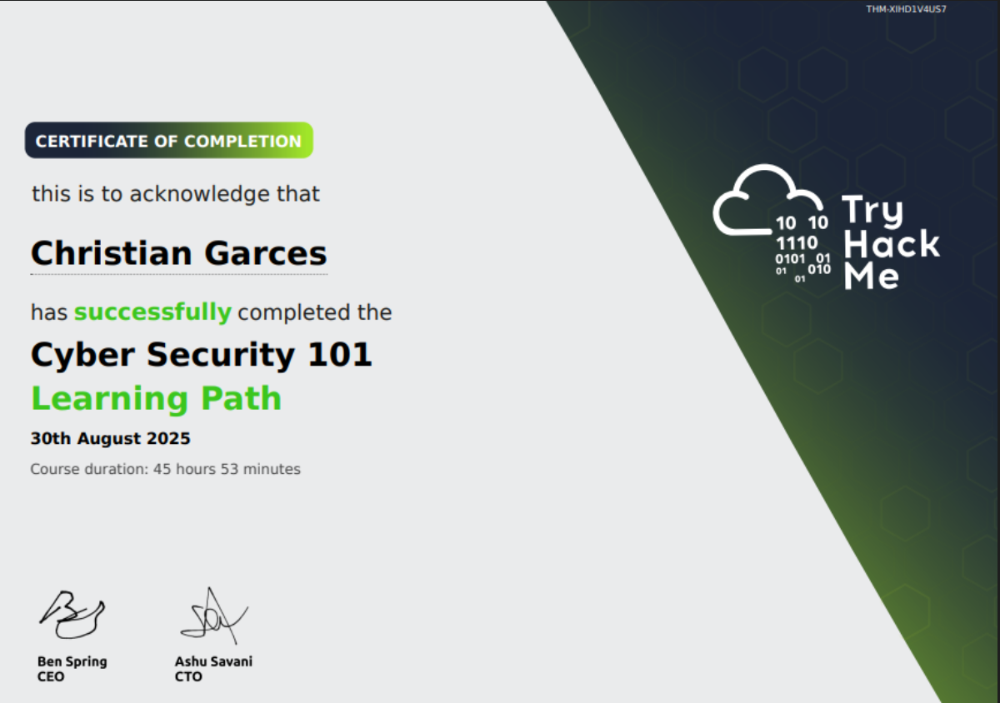

Cybersecurity 101 Certificate
Completed: August 2025
Hands-On Experience
Through TryHackMe's Cybersecurity 101 course, I gained practical experience with both offensive and defensive security tools:
Offensive Security Tools:
- Network Reconnaissance: nmap for port scanning and service enumeration
- Vulnerability Assessment: Nikto for web application scanning
- Exploitation: Metasploit framework for penetration testing
- Web Application Testing: Burp Suite for web vulnerability discovery
- Password Attacks: Hydra and John the Ripper for password cracking
Defensive Security Tools:
- Network Monitoring: Wireshark for packet analysis and traffic inspection
- Log Analysis: ELK Stack (Elasticsearch, Logstash, Kibana) for security event correlation
- Intrusion Detection: Snort for network-based intrusion detection
- System Hardening: Linux security configurations and access controls
- Incident Response: Forensic analysis techniques and evidence collection
Practical Skills Developed:
- Conducting vulnerability assessments and penetration tests
- Analyzing network traffic for suspicious activities
- Implementing security controls and monitoring systems
- Documenting security findings and remediation steps
- Understanding attack methodologies and defense strategies